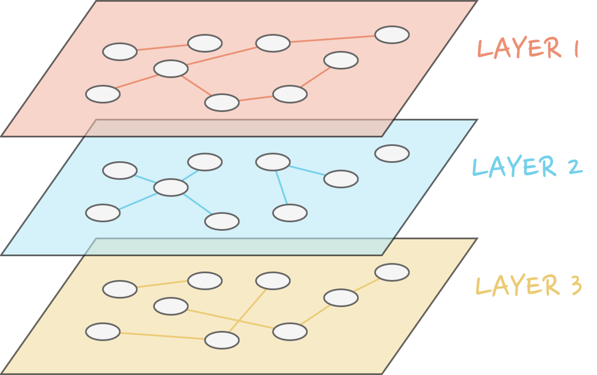
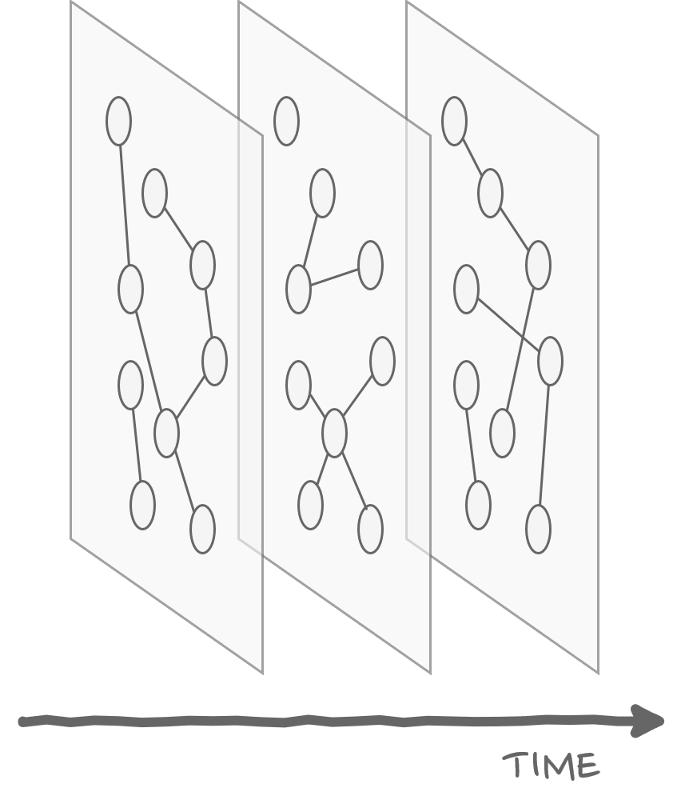
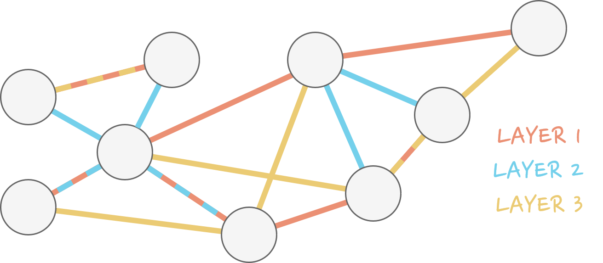

What is a multilayer and their applications
Now that we have seen the basic properties of the most intuitive networks, those that are contained within a single layer, we can take a step further on the generalisation of the models we can generate with a complex network by including several layers. Let us dive into the study of multilayer
networks.
The motivation for including more than a single layer in our description is straightforward: in real systems we usually have more than one type of interaction or more than one type of node. In fact, the first multilayer models came by the hand of sociologists, who used them to take into consideration the multiple social networks of an individual (work, family, friends…).
The study of this type of networks makes use of the concepts we already saw in the previous video to characterise monolayer networks, but sometimes the generalisation is far from trivial. This is due to the fact that multilayers open a very broad spectrum of interactions to be described, and so sometimes more complicated measures are needed in order to capture all the information the network carries within.
Indeed, there are many ways in which the different layers may be connected. We may have a layer per instant of time, in which we have the same nodes but the links may evolve dynamically- this is the case of temporal networks. If we always have the same nodes but the connections in each layer correspond to a different kind of interaction, we are facing a multiplex- this would be the case of a public transport network, for example, in which the different layers signal the links between stations by train, bus, metro… In our attempt to generalise even further, we can even build a hyper graph, that is, a multilayer in which we may have edged that connect more than two nodes across layers (we can imagine this as a flat 2D figure delimited by each of the nodes present on the link). An example of this could be the in the representation of a company’s employees, for example, where different layers correspond to different hierarchy levels and the hyperedge encodes a department or a current project.
The way to encode the information contained in multilayer networks isn’t unique either (for example, in the previous case of the companies we could have simply given a distinct colour to the nodes contained on each hyperedge, thus obtaining a coloured graph instead of a hypergraph), often we just try to find the most convenient alternative.
To wrap up this brief introduction to multilayer networks let’s look at a real-life example with a bit more detail. Imagine we want to describe the evolution of the populations of rabbits and foxes over a certain region. In this model, each node is an area where these two species interact, and each layer holds the distribution and dynamics of one species. Then the interlayer connections (which will only be possible between the same node) account for the intensity of the interaction between predator and prey at that site. Say, if the location describe by a node is a plain without many places to hide, the interaction will be higher. In this way we can study the diffusion of both species- that is, the movement of rabbits and foxes- across the region.


